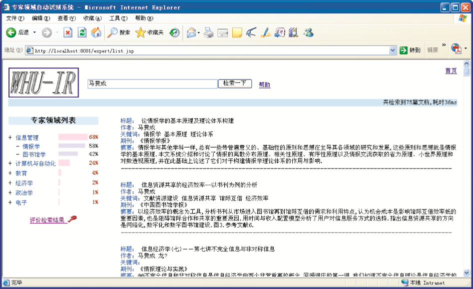

首页
团队
项目
新闻
工具
科研项目
project PROJECT
武汉大学网络舆情监控系统
武汉大学网络舆情监控系统中，信息源的采集主要是实时获取搜索引擎的检索结果和对指定站点的自动采集相结合的方式。首先以“武汉大学”、“武大”为关键字，调用Google、Bing、百度、搜狗、有道5个搜索引擎对这两个关键词的检索结果，获取最新的新闻页面；再对各个搜索引擎的返回结果去重整合，返回按时间倒序的新闻列表。
NEViewer
NEViewer是一款网络演化可视化分析与探测工具，由王晓光设计，程齐凯编码，功能完备，既可在课程研究论文中使用，也可用于特定的科研领域研究主题的演化过程的研究。

武汉大学专家检索系统
武汉大学专家检索系统的主要功能有:根据用户键入的关键词寻找与该关键词最为相关的网页文档,继而通过事先生成的专家文档映射库体现系列参考专家列表,并按照一定的策略(主要参见TREC会议中专家检索的基本方法),得到系统认为的较为相关的系列专家,当然这仅仅是通过特定数据集合得到的参考专家列表(不同的专家列表可能会产生不同的相关专家排序列表).
武汉大学网络舆情监控系统
武汉大学网络舆情监控系统中，信息源的采集主要是实时获取搜索引擎的检索结果和对指定站点的自动采集相结合的方式。首先以“武汉大学”、“武大”为关键字，调用Google、Bing、百度、搜狗、有道5个搜索引擎对这两个关键词的检索结果，获取最新的新闻页面；再对各个搜索引擎的返回结果去重整合，返回按时间倒序的新闻列表。
NEViewer
NEViewer是一款网络演化可视化分析与探测工具，由王晓光设计，程齐凯编码，功能完备，既可在课程研究论文中使用，也可用于特定的科研领域研究主题的演化过程的研究。
上一页
1
2
3
4
5
下一页
共5页